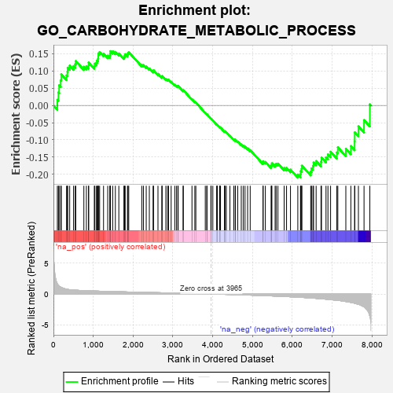
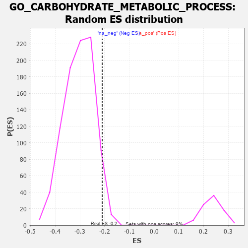

| | | Dataset | 7d |
| Phenotype | NoPhenotypeAvailable |
| Upregulated in class | na_neg |
| GeneSet | GO_CARBOHYDRATE_METABOLIC_PROCESS |
| Enrichment Score (ES) | -0.2097084 |
| Normalized Enrichment Score (NES) | -0.69132304 |
| Nominal p-value | 0.9572368 |
| FDR q-value | 1.0 |
| FWER p-Value | 1.0 |
Table: GSEA Results Summary

Fig 1: Enrichment plot: GO_CARBOHYDRATE_METABOLIC_PROCESS
Profile of the Running ES Score & Positions of GeneSet Members on the Rank Ordered List
| PROBE | GENE SYMBOL | GENE_TITLE | RANK IN GENE LIST | RANK METRIC SCORE | RUNNING ES | CORE ENRICHMENT | | 1 | IRS1 | | | 98 | 1.659 | 0.0165 | No |
| 2 | GLB1 | | | 125 | 1.416 | 0.0379 | No |
| 3 | TKT | | | 143 | 1.309 | 0.0587 | No |
| 4 | PYGB | | | 183 | 1.114 | 0.0732 | No |
| 5 | LDHB | | | 197 | 1.075 | 0.0903 | No |
| 6 | NUP85 | | | 329 | 0.772 | 0.0871 | No |
| 7 | GSK3A | | | 351 | 0.745 | 0.0974 | No |
| 8 | ARNT | | | 357 | 0.741 | 0.1097 | No |
| 9 | OCRL | | | 408 | 0.691 | 0.1155 | No |
| 10 | NUP54 | | | 505 | 0.627 | 0.1142 | No |
| 11 | BRS3 | | | 547 | 0.614 | 0.1197 | No |
| 12 | PIGQ | | | 560 | 0.609 | 0.1288 | No |
| 13 | UGDH | | | 764 | 0.540 | 0.1124 | No |
| 14 | RAE1 | | | 827 | 0.524 | 0.1136 | No |
| 15 | PYGL | | | 882 | 0.510 | 0.1157 | No |
| 16 | PARG | | | 884 | 0.509 | 0.1244 | No |
| 17 | G6PC3 | | | 1026 | 0.478 | 0.1148 | No |
| 18 | AKT1 | | | 1040 | 0.476 | 0.1215 | No |
| 19 | FOXK2 | | | 1081 | 0.467 | 0.1246 | No |
| 20 | DPM3 | | | 1097 | 0.464 | 0.1308 | No |
| 21 | G6PC | | | 1121 | 0.459 | 0.1359 | No |
| 22 | NUP93 | | | 1127 | 0.459 | 0.1432 | No |
| 23 | SRC | | | 1128 | 0.459 | 0.1513 | No |
| 24 | NUP43 | | | 1160 | 0.453 | 0.1552 | No |
| 25 | GALM | | | 1258 | 0.437 | 0.1505 | No |
| 26 | GALT | | | 1363 | 0.416 | 0.1445 | No |
| 27 | P2RY1 | | | 1416 | 0.407 | 0.1450 | No |
| 28 | RPE | | | 1425 | 0.405 | 0.1511 | No |
| 29 | NUP88 | | | 1429 | 0.404 | 0.1578 | No |
| 30 | GPT | | | 1488 | 0.392 | 0.1572 | No |
| 31 | MPI | | | 1555 | 0.382 | 0.1555 | No |
| 32 | DDB1 | | | 1642 | 0.366 | 0.1509 | No |
| 33 | LRP5 | | | 1769 | 0.342 | 0.1408 | No |
| 34 | NUP58 | | | 1787 | 0.340 | 0.1446 | No |
| 35 | COQ2 | | | 1801 | 0.337 | 0.1488 | No |
| 36 | FOXK1 | | | 1859 | 0.326 | 0.1473 | No |
| 37 | NUP62 | | | 1871 | 0.324 | 0.1515 | No |
| 38 | PC | | | 1891 | 0.321 | 0.1547 | No |
| 39 | MLEC | | | 2221 | 0.273 | 0.1176 | No |
| 40 | GNMT | | | 2261 | 0.266 | 0.1173 | No |
| 41 | SEC13 | | | 2330 | 0.256 | 0.1131 | No |
| 42 | OMA1 | | | 2408 | 0.244 | 0.1076 | No |
| 43 | KAT2B | | | 2502 | 0.226 | 0.0997 | No |
| 44 | MANBA | | | 2514 | 0.225 | 0.1022 | No |
| 45 | NUP50 | | | 2625 | 0.209 | 0.0918 | No |
| 46 | HAS1 | | | 2722 | 0.195 | 0.0830 | No |
| 47 | RORA | | | 2730 | 0.193 | 0.0855 | No |
| 48 | PCK2 | | | 2823 | 0.180 | 0.0769 | No |
| 49 | WDTC1 | | | 2865 | 0.172 | 0.0747 | No |
| 50 | WDR5 | | | 2892 | 0.168 | 0.0743 | No |
| 51 | IDH3A | | | 2956 | 0.157 | 0.0690 | No |
| 52 | MAEA | | | 3048 | 0.143 | 0.0599 | No |
| 53 | TIGAR | | | 3091 | 0.138 | 0.0570 | No |
| 54 | MTMR2 | | | 3126 | 0.133 | 0.0550 | No |
| 55 | COQ3 | | | 3132 | 0.133 | 0.0567 | No |
| 56 | COX11 | | | 3256 | 0.113 | 0.0430 | No |
| 57 | NUP98 | | | 3261 | 0.112 | 0.0444 | No |
| 58 | LDHA | | | 3479 | 0.080 | 0.0182 | No |
| 59 | FUT8 | | | 3551 | 0.067 | 0.0103 | No |
| 60 | LCMT1 | | | 3576 | 0.063 | 0.0084 | No |
| 61 | RPIA | | | 3813 | 0.026 | -0.0213 | No |
| 62 | ITPK1 | | | 3851 | 0.020 | -0.0256 | No |
| 63 | DGKQ | | | 3856 | 0.020 | -0.0258 | No |
| 64 | EXT1 | | | 3954 | 0.001 | -0.0381 | No |
| 65 | NCOR1 | | | 3961 | 0.000 | -0.0389 | No |
| 66 | GCNT4 | | | 4003 | -0.009 | -0.0439 | No |
| 67 | CHID1 | | | 4099 | -0.023 | -0.0556 | No |
| 68 | IMPA1 | | | 4112 | -0.024 | -0.0567 | No |
| 69 | MTOR | | | 4114 | -0.025 | -0.0564 | No |
| 70 | SYNJ1 | | | 4173 | -0.038 | -0.0632 | No |
| 71 | PDX1 | | | 4179 | -0.038 | -0.0631 | No |
| 72 | GNPTG | | | 4196 | -0.041 | -0.0644 | No |
| 73 | USF1 | | | 4296 | -0.059 | -0.0760 | No |
| 74 | CRYL1 | | | 4300 | -0.060 | -0.0754 | No |
| 75 | IPPK | | | 4306 | -0.060 | -0.0749 | No |
| 76 | PHKG1 | | | 4341 | -0.067 | -0.0781 | No |
| 77 | GCNT3 | | | 4432 | -0.082 | -0.0881 | No |
| 78 | BPNT1 | | | 4530 | -0.101 | -0.0987 | No |
| 79 | ADPGK | | | 4567 | -0.109 | -0.1014 | No |
| 80 | NISCH | | | 4568 | -0.109 | -0.0995 | No |
| 81 | CLK2 | | | 4628 | -0.124 | -0.1049 | No |
| 82 | GANC | | | 4717 | -0.143 | -0.1136 | No |
| 83 | DCXR | | | 4766 | -0.151 | -0.1170 | No |
| 84 | XYLB | | | 4811 | -0.160 | -0.1199 | No |
| 85 | DHDH | | | 4876 | -0.172 | -0.1250 | No |
| 86 | EP300 | | | 4941 | -0.186 | -0.1299 | No |
| 87 | PTEN | | | 5262 | -0.261 | -0.1661 | No |
| 88 | CASD1 | | | 5267 | -0.264 | -0.1620 | No |
| 89 | OGDHL | | | 5322 | -0.277 | -0.1640 | No |
| 90 | CPT1A | | | 5467 | -0.311 | -0.1769 | No |
| 91 | GALK2 | | | 5476 | -0.313 | -0.1725 | No |
| 92 | ACTN3 | | | 5486 | -0.315 | -0.1681 | No |
| 93 | GALE | | | 5567 | -0.338 | -0.1724 | No |
| 94 | PGM1 | | | 5593 | -0.342 | -0.1696 | No |
| 95 | G6PD | | | 5638 | -0.358 | -0.1690 | No |
| 96 | MGAT2 | | | 5794 | -0.403 | -0.1817 | No |
| 97 | TKFC | | | 5854 | -0.419 | -0.1819 | No |
| 98 | GALK1 | | | 5953 | -0.455 | -0.1864 | No |
| 99 | PGM2 | | | 6137 | -0.515 | -0.2007 | Yes |
| 100 | INSR | | | 6204 | -0.538 | -0.1997 | Yes |
| 101 | GYG1 | | | 6210 | -0.539 | -0.1909 | Yes |
| 102 | RGN | | | 6233 | -0.547 | -0.1841 | Yes |
| 103 | MIOX | | | 6238 | -0.549 | -0.1751 | Yes |
| 104 | NPL | | | 6461 | -0.644 | -0.1921 | Yes |
| 105 | DYSF | | | 6481 | -0.654 | -0.1831 | Yes |
| 106 | FGGY | | | 6517 | -0.669 | -0.1758 | Yes |
| 107 | DYRK2 | | | 6533 | -0.677 | -0.1659 | Yes |
| 108 | TPR | | | 6597 | -0.709 | -0.1616 | Yes |
| 109 | GSK3B | | | 6719 | -0.768 | -0.1635 | Yes |
| 110 | NPY1R | | | 6732 | -0.776 | -0.1515 | Yes |
| 111 | PTH1R | | | 6845 | -0.839 | -0.1511 | Yes |
| 112 | HEXB | | | 6894 | -0.864 | -0.1421 | Yes |
| 113 | MDH1B | | | 6960 | -0.912 | -0.1345 | Yes |
| 114 | PYGM | | | 7117 | -1.006 | -0.1368 | Yes |
| 115 | ALDH2 | | | 7142 | -1.030 | -0.1218 | Yes |
| 116 | GPD1L | | | 7343 | -1.215 | -0.1261 | Yes |
| 117 | SHPK | | | 7469 | -1.360 | -0.1182 | Yes |
| 118 | ENO4 | | | 7564 | -1.495 | -0.1041 | Yes |
| 119 | CALM1 | | | 7567 | -1.499 | -0.0781 | Yes |
| 120 | HEXA | | | 7659 | -1.659 | -0.0607 | Yes |
| 121 | YDJC | | | 7800 | -2.061 | -0.0425 | Yes |
| 122 | PASK | | | 7946 | -3.674 | 0.0032 | Yes |
Table: GSEA details [plain text format]

Fig 2: GO_CARBOHYDRATE_METABOLIC_PROCESS: Random ES distribution
Gene set null distribution of ES for GO_CARBOHYDRATE_METABOLIC_PROCESS